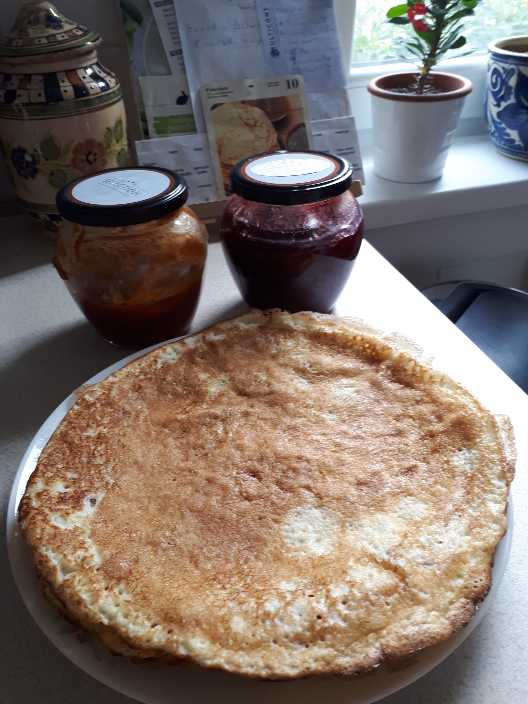
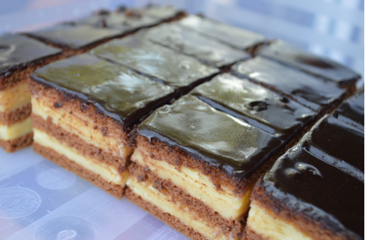
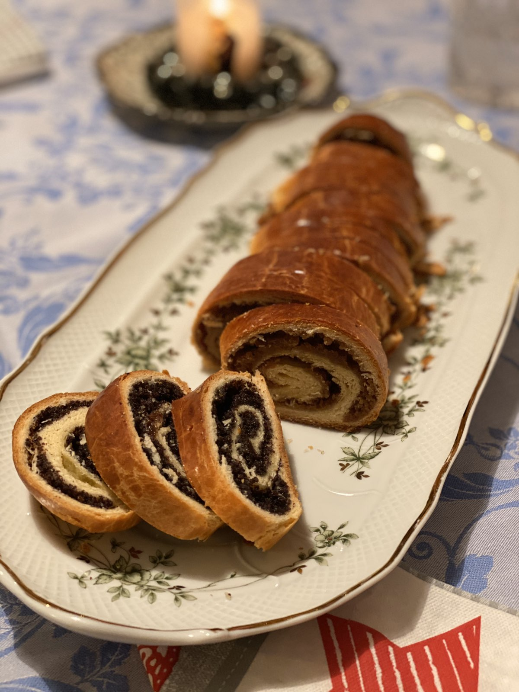
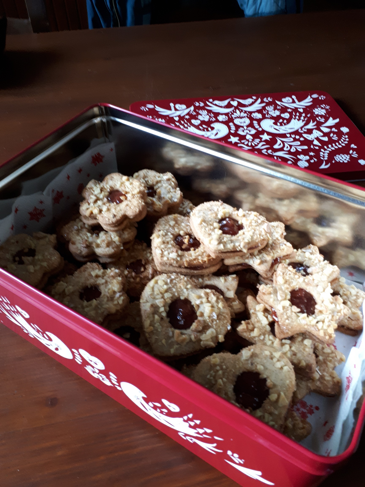

Családi finomságok - Desszertek
Ez egy családi recepteket összegyűjtő weboldal.
Palacsinta

Palacsintát a családban többen és többfélét készítünk.
Én a hagyományos vékony palacsintát készítem, de az utóbbi időben megkedveltem
a zabpehelyből készülő kicsit vastagabb sütőporos palacsintát is. Ennek a tésztáját elkészítem este,
és másnap reggelire kisütök belőle néhány darabot. Idénygyümölcsöt is süthetünk bele. A lenti táblában néhány palacsinta variációt találtok.
| Hozzávalók |
Hagyományos |
Amerikai |
Amerikai zabliszttel |
| liszt |
20 dkg |
20 dkg |
18,5 dkg zabpehely liszt |
| tojás |
2 db |
1 db |
2 db |
| tej |
3 dl |
3 dl |
2,5 dl |
| szódavíz |
2 dl |
- |
- |
| cukor |
csipet |
1 evk porcukor |
2 evk |
| só |
csipet |
csipet |
fél tk |
| sütőpor |
- |
1 csomag |
2,5 tk |
| zsíradék |
2 evk olaj |
4,5 dkg olvasztott vaj |
3 evk olvasztott vaj |
- A hagyományos palacsintához a tojásokat, a lisztet, a tejet és a szódát mixeljük össze.
Az étolaj hozzáadásával keverjük simára.
- Forrósítsunk fel egy vagy két palacsinta sütőt.
- Kenjük meg egy kevés olajjal, kisméretű kanállal oszlassuk el a folyékony tésztát a sütőn.
- Rövid sütési idő után (max 1 perc) egy lapáttal fordítsuk meg.
- Ha kész, tálaljuk változatos töltelékkel.
Almás rácsos pite

A rácsos pite a miskolci nagymama specialitása volt.
Sokszor készítette hétvégéken, a tésztát csak baracklekvárral vastagon megkenve,
ferdén rácsozva, sütés után porcukrozva. Én az almás változatot
készítem,amikor is lekvár helyett almatöltelék kerül a rácsok alá. Azért a klasszikus - Béres nagyi féle - lekváros
rácsos receptjének hozzávalóit is leírom itt lentebb a táblázatban.
Hozzávalók:
Tészta: 30 dkg liszt, 10 dkg porcukor, 10 dkg vaj, 2 tk sütőpor, 1 csomag vaníliás cukor.
Töltelék: 6 db közepes alma, 3 evk barna cukor karamellizálva, 2 dl almalé, fél tasak vaníliás pudingpor,
fahéj.
- A tészta hozzávalóit összegyúrjuk, hűvös helyen pihentetjük. ( A tojásokat felverve tegyük a tésztához,
és egy keveset hagyunk meg a rácsok megkenéséhez.)
- A töltelékhez az almát meghámozzuk és lereszeljük.
- 2 evk kristálycukrot karamellizálunk, amelyen a reszelt almát félig megpároljuk.
- Az almalében a pudingport jól elkeverjük, és besűrítjük vele a kissé párolt almánkat.
- A tölteléket lehűtjük, fahéjjal ízesítjük.
- A tészta kétharmadát kinyújtjuk a tepsink méretében, majd belehelyezzzük. A tepsit zsírozni nem kell,
mert a tésztánkban van elég zsiradák. Zsemlemorzsával megszórjuk, rásimítjuk a tölteléket.
- A tészta maradék egy harmadát kicsit vastagra, de kinyújtjuk, kb 10 csíkra vágjuk.
- Nem lisztezett konyhapulton a tésztacsíkokból hosszú hengereket formázunk,
és az almatölteléket berácsozzuk. A félretett tojással megkenjük.
- 180 fokon kb 40 percig sütjük.
- Ha elkészült kihűtjük, megszórhatjuk fahéjas porcukorral.
Ha az almánk már elég érett, elégséges csak reszelve, cukrozva, fahéjazva
a süteménybe tenni, viszont a pudinggal krémesebb lesz a töltelék.
| Hozzávalók |
Almás rácsos |
Családi rácsos |
Linzi rácsos |
Linzer alap/Isler |
| liszt |
30 dkg |
50 dkg |
40 dkg |
30 dkg |
| porcukor |
10 dkg+1 vaníl.c |
20 dkg |
12 dkg |
10 dkg |
| sütőpor |
2 tk |
1 csomag |
1/2 tk |
| só |
1 csipet |
1 csipet |
1 csipet |
| tojás |
2 db |
1 db |
1 tojás sárgája |
1 db |
| vaj/margarin |
10 dkg |
20 dkg |
25 dkg |
20 dkg |
| darált dió/mandula |
- |
10 dkg |
9 dkg |
| tej |
- |
1 dl |
4 evk |
| fahéj |
- |
1 tk |
1 tk |
A 3 mm vastagra kinyújtott linzer alaptésztából bármilyen tallérokat kiszúrhatunk és süthetünk finom aprósüteményeket.
Az Islerhez a kiszúrt 4 cm-es korongokat 30 percig hidegen pihentessük, 170 fokon süssük 8-10 percig.
A korongokat málnalekvárral összeragasztjuk. 1 evk olajat és csokit vízgőz fölött összeolvasztunk,
majd a tallérokat fejjel lefelé a csokiban megmártjuk.
Néger szelet

Karácsonykor vagy húsvétkor nagyszerű ünnepi sütemény a Néger szelet.
Tulajdonképpen ez egy mézes krémes, mert mostanáig sokfajta változatát készítik.
A családi finomságok közt ez az édesanyám szuper süteménye !
Hozzávalók:
Tészta (3 lap): 2 egész tojás, 5 dkg vaj/margarin, 10 dkg cukor, 2 evk méz, 40 dkg liszt, 1 kk szódabikarbóna.
Krém: 20 dkg vaj/margarin, 20 dkg porcukor, 2 cs. vaniliás cukor, 1/2 l tej, 4 evk liszt.
Máz: 2 dkg kakaó, 10 dkg cukor, 4 evk víz, 3 dkg vaj.
- A tésztához gőz fölött kikeverjük a vajat, a tojást, a cukrot, a mézet.
- Kb 5 percig keverjük, vigyázzunk, nehogy leégjen, szépen karamellizálódjon.
- Hozzáadjuk a lisztet és a szódabikarbónát, simára keverjük, majd melegen még kézzel jól összegyúrjuk.
- 3 részre osztjuk, a lapokat 2 mm vékonyra kinyújtjuk.(Amíg egy lapot nyújtok, a többi tésztát melegen tartom.)
- Tepsi hátuljára tesszük a lapokat, és 165 fokon kb 10 perc alatt halvány barnára megsütjük.
- A krémhez robottal habosra keverjük a vajat a porcukorral, vaníliás cukorral.
- A fél liter tejet a 4 kanál liszttel sűrűre felfőzzük, langyosra hűtjük.
- A vajas cukros masszához adjuk, és a géppel jól összekeverjük.
- A krémet két részre osztjuk, és a 3 mézes lap közé töltjük. Egy éjszakán át hűvös helyen pihentetjük.
- A máz hozzávalóit göz fölött összefőzzük és még melegen a sütemény tetejére simítjuk.
- Dermedés után szeletelhető.
Bejgli

A bejgli a karácsonyi ünnepi asztal hagyományos süteménye. Mákos és diós alaptípusának
ma már sok újragondolt változatával találkozhatunk. Ez az én kipróbált süteményem a tölteléke miatt lett nagy kedvenc,
mert mézzel is édesítem, és reszelt citromhéj helyett narancshéj van benne. Dúsíthatjuk a mákos tölteléket meggyel pl. rumossal,
de a diós bejglit aszalt szilvával is készíthetjük.
Hozzávalók:
Tészta (4 tekercs): 50 dkg liszt, 20 dkg margarin/vaj, 5 dkg porcukor+vaniliás, 1 dkg só, 1 dkg élesztő/1 kk szárított,
4 db tojássárgája, 1,5 dl tej, a kenéshez 1 db tojás.
Máktöltelék (4 tekercshez): 45 dkg mák, 32 dkg kristálycukor, 10 dkg méz (2 evk), 5 dkg mazsola, 5 dkg búzadara, 1 db narancs reszelt héja, 2 dl forró víz.
Diótöltelék (4 tekercshez): 40 dkg dió, 32 dkg kristálycukor, 10 dkg méz (2 evk), 5 dkg mazsola, 7 dkg darált keksz, 1 db narancs reszelt héja, 1 dl forró víz.
- A töltelékeket készítsük el előbb, mert finomabb, ha az ízek jól összeérnek. A mákot a cukor felével megdaráljuk, a másik feléből a forrő vízzel szirupot készítünk.
Ezt ráöntjük a darált mákra, hozzáadjuk a mézet, a mazsolát, a búzadarát és belereszeljük 1 jól megmosott narancsnak a héját. Jól összekeverjük és lefedve tároljuk a felhasználásig.
- A dió tölteléket hasonló módon készítjük, a fenti hozzávalókból. A felhasználáskor a töltelék ne legyen hideg, mert akkor nehezebben lehet a tésztára kenni.
- A lisztbe beledaraboljuk a margarint, belemorzsoljuk az élesztőt (nem kell megfuttatni). Hozzátesszük a porcukrot, vaníliás cukrot, sót, 4 tojássárgát, 1,5 dl tejet. Jól összegyúrjuk.
- A tésztának jól nyújthatónak kell lennie. Tejet vagy még lisztet lehet hozzáadni, hogy jól összeálljon. Hidegen 20 percig pihentetjük.
- Négy részre osztjuk a tésztát (kb 25 dkg/db), ismét jól összegyúrjuk, és pihentetjük újabb 20 percig.
- Kinyújtjuk 2 mm vastagra, kb egy fekvő A4-es méretre. Enyhén lehet lisztezni a munkalapot, a tésztát már nem kell lisztezni!
- A tölteléket egyenletesen rásimítjuk úgy, hogy a széleinél egy cm-t kihagyunk. A 25 dkg-os tésztához kb 25 dkg töltelék kell. Ha több a töltelék, sütéskor kireped a tészta !
- Jobb és baloldalon picit behajtjuk a tésztát, majd felülről nem túl szorosan feltekerjük.
- Sütőpapíros tepsibe tesszük, és a felvert tojással 1-szer jól megkenjük, az oldalát se hagyjuk ki. Hűvös helyre tesszük 10 percre. Ismét megkenjük a tojással, ismét hűvös helyen kicsit szárítjuk a tojást.
Hurkapálcával megszúrkáljuk a gerince mentén 3 cm-enként az aljáig, így kijön a gőz sülés közben.
- Előmelegített légkeveréses sütőben 180 fokon 20-25 percig sütjük.
- Hagyjuk kihűlni és vihetjük dicsekedni!
A tölteléket akár 3-4 nappal hamarabb is elkészíthetjük. Sziruppal forrázzuk a tölteléket.
Márványos akkor lesz a bejglink, ha kétszer kenjük a felvert tojással, hűvös helyen pihentetjük.
Ha kicsit rászáradt a tojás és ismét kenjük, akkor lesz un. krokodil mintás a bejglink.
A kész rudakat légmentesen folpackba csomagoljuk, így már pár nappal az ünnep előtt elkészíthetjük. Akár ajándékba is adhatjuk.
Adventi sütemény

Ezt a süteményt anyukám készítette, amelynek recepjét saját kézírásával még ma is használom.
Az adventi sütemény nevet én adtam neki, mert a linzerkarikák tetejét darabolt dió és kristálycukor keverékébe mártva sütjük,
és ezzel igen ünnepivé tesszük ezt az omlós, házi lekvárral összeragasztott apró süteményt.
Hozzávalók:
25 dkg liszt, fél cs. sütőpor, 10 dkg porcukor+vaníliás, 1 tojás sárgája, 10 dkg vaj/margarin, 3 evk tej. A tetejére 10 dkg dióbél, 4 dkg kristálycukor.
- A tészta hozzávalóit összegyúrjuk,a tejet a végén tegyük hozzá, ui. ha kemény a tésztánk, azt kevés tejjel még lazíthatjuk.
- 2 mm vastagságúra kinyújtjuk, és apró formákban szaggatjuk.
- A diót apróra vágjuk, kristálycukrot szórunk rá.
- A kiszaggatott formák felének a közepébe kis lyukat szúrunk. Én az egyik gyűszűmet használom erre.
- Tetejüket kenőtollal tejjel megkenjük, és belenyomjuk a diós cukorba, hogy az jól ráragadjon.
- Sütöpapírral kibélelt tepsiben a kiszaggatott alsó és diós felső részeket 180 fokon kb 10 perc alatt megsütjük.
- Vigyázzunk, mert hamar megég, halvány zsemleszínűre süssük.
- A kihült tésztát bármilyen lekvárral összeragaszthatjuk. Felső a diós, lyukas rész. Ne sajnáljuk a lekvárt, mert ez puhítja meg a süteményünket.
- Zárt dobozban másnapra megpuhul és nagyon finom süteményünk lesz, sokáig eláll.
Zserbógolyó
A családi fonomságok közt most a zserbó receptjét szerettem volna megosztani. Többször el is készítettem. Ez egy nagyon alapanyag igényes és készítésében sok időt kíván.
Tökéletes sütemény pedig csak akkor lesz belőle, ha sok házi baracklekvárral és dióval töltjük meg a lapokat.
Eszter lányom a sütemény helyettesítéseként zserbógolyót készít, ami gyors, és sütni sem kell, másrészt mindíg tökéletes lesz.
| Hozzávalók |
Családi |
Alap |
Zabkekszes |
| kekszmorzsa |
25 dkg |
15 dkg |
25 dkg |
| darált dió |
25 dkg |
10 dkg |
20 dkg |
| barack lekvár |
20 dkg + cukor |
17 dkg |
20 dkg |
| bevonáshoz |
1 evk olaj +15 dkg étcsokoládé |
1 evk olaj +20 dkg étcsoki |
1 kk olaj +5 dkg vaj +10 dkg étcsoki |
| díszítéshez |
3 dkg darált dió |
fél tábla fehér csoki |
kókuszreszelék |
- A kekszet, a diót összeforgatjuk, és annyi baracklekvárt adunk hozzá, hogy formálható állagú legyen.
- Ezután vizes kézzel kb diónyi golyókat formálunk belőle, hideg helyen pihentetjük, hogy jól megdermedjen.
- A közepébe tehetünk aszalt gyümülcs darabot, vagy meggyet.
- Az olajat és a csoki háromnegyedét gőz felett megolvasztjuk, majd levesszük a gőzről, hozzáadjuk a maradék csokit,
és kevergetve feloldjuk benne.
- A lehűtött golyókat egy villára szúrjuk és az olvasztott csokiba mártjuk, a felesleget hagyjuk lecsepegni.
- Darált dióval, vagy olvasztott fehér csokival díszítjük, hidegen tartjuk, amíg a csoki megszilárdul.